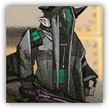
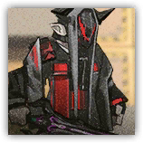

萨卡兹魔剑士 Sarkaz Bladeweaver
近战 法术；精英 萨卡兹

|  |
萨卡兹雇佣兵。血液中流淌的源石允许他们握住这些粗糙改造的法术巨剑。待命时不会攻击，进入临战状态后，将会造成近战法术伤害。 受诅魔剑。萨卡兹魔剑士持用一把复仇之剑（巨剑），该剑攻击造成的伤害会转化为黯蚀伤害，并额外造成1d8点黯蚀伤害。诅咒：同调期间，你进行短休所需的时间翻倍，且期间处于失能状态。 |
萨卡兹魔剑士丨Sarkaz Bladeweaver
中型或大型类人（萨卡兹），混乱中立
| AC 13 | 先攻 +2（12） |
| HP 67 (9d10+18) | |
| 速度 20 尺 | |
| 调整 | 豁免 | 调整 | 豁免 | 调整 | 豁免 | |||||||||
|---|---|---|---|---|---|---|---|---|---|---|---|---|---|---|
| 力量 | 18 | +4 | +6 | 敏捷 | 15 | +2 | +2 | 体质 | 15 | +2 | +2 | |||
| 智力 | 9 | -1 | -1 | 感知 | 7 | -2 | -2 | 魅力 | 15 | +2 | +4 |
| 技能 运动+6，威吓+4 |
| 抗性 毒素 |
| 装备 受诅魔剑，布甲 |
| 感官 黑暗视觉60尺，被动察觉8 |
| 语言 通用语，萨卡兹语 |
| CR 3 (700 XP; PB +2) |
特质Traits
魔法抗性 Magic Resistence。萨卡兹为抵抗法术和其它魔法效应而作的豁免检定具有优势。
深层待命 Deep Standby。萨卡兹魔剑士初始处于失能状态且无法进行先攻检定，直到其受到伤害或受益于临战警戒时才掷先攻。
动作Actions
多重攻击 Multiattack。萨卡兹魔剑士发动两次魔剑攻击。
魔剑 Bladeweaver。近战攻击检定：+7（若目标生命值未满则有优势），触及5尺。命中：16（2d6+5+1d8）黯蚀伤害。
反应Reactions
嗜血突进 Bloodthirsty Charge。触发：萨卡兹魔剑士进行了先攻检定，或受到了伤害。响应：萨卡兹魔剑士立刻移动至多20尺。
萨卡兹魔剑士组长 Sarkaz Bladeweaver Leader
近战 物理；普通 萨卡兹
|  |
萨卡兹雇佣兵。将法术与剑术完美结合的精锐战士。血液中流淌的源石允许他们握住这些粗糙改造的法术巨剑。待命时不会攻击，进入临战状态后，将会造成近战法术伤害。 受诅魔剑。萨卡兹魔剑士持用一把复仇之剑（巨剑），该剑攻击造成的伤害会转化为黯蚀伤害，并额外造成1d8点黯蚀伤害。诅咒：同调期间，你进行短休所需的时间翻倍，且期间处于失能状态。 |
萨卡兹魔剑士组长丨Sarkaz Bladeweaver Leader
中型或大型类人（萨卡兹），混乱中立
| AC 14 | 先攻 +3（13） |
| HP 102（12d10+36） | |
| 速度 20 尺 | |
| 调整 | 豁免 | 调整 | 豁免 | 调整 | 豁免 | |||||||||
|---|---|---|---|---|---|---|---|---|---|---|---|---|---|---|
| 力量 | 19 | +4 | +7 | 敏捷 | 16 | +3 | +3 | 体质 | 16 | +3 | +3 | |||
| 智力 | 11 | +1 | +1 | 感知 | 9 | -1 | -1 | 魅力 | 16 | +3 | +6 |
| 技能 运动+7，威吓+6 |
| 抗性 毒素 |
| 装备 受诅魔剑，布甲 |
| 感官 黑暗视觉60尺，被动察觉9 |
| 语言 通用语，萨卡兹语 |
| CR 5（1,800 XP；PB +3） |
特质 Traits
魔法抗性 Magic Resistence。萨卡兹为抵抗法术和其它魔法效应而作的豁免检定具有优势。
深层待命 Deep Standby。萨卡兹魔剑士初始处于失能状态且无法进行先攻检定，直到其受到伤害或受益于临战警戒时才掷先攻。
动作 Actions
多重攻击 Multiattack。萨卡兹魔剑士组长发动两次魔剑攻击。
魔剑 Bladeweaver。近战攻击检定：+8（若目标生命值未满则有优势），触及5尺。命中：16（2d6+5+1d8）黯蚀伤害。失手：4黯蚀伤害。
反应 Reactions
嗜血复仇 Bloodthirsty Revenge。触发：萨卡兹魔剑士进行先攻检定，或受到了伤害。响应：萨卡兹魔剑士立即移动至多20尺，然后可以发动一次魔剑攻击。